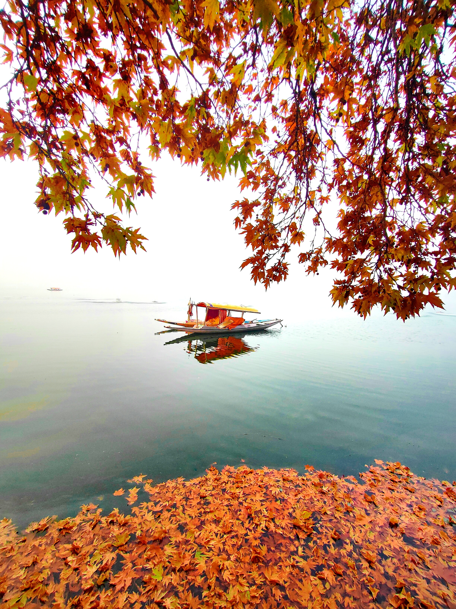
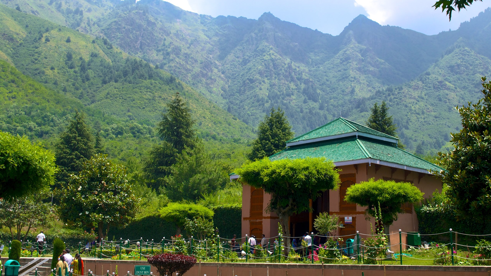
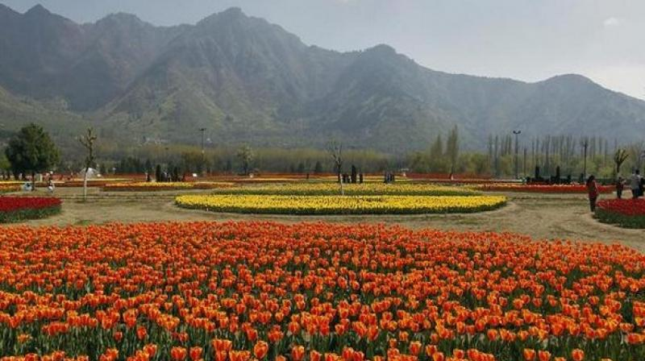

Elegant abodes afloat on the
placid waters of Dal Lake, these houseboats epitomize
Kashmir's timeless charm, offering serenity amidst nature's grandeur.

Amidst Dal Lake's aqueous expanse,
a vibrant and bustling vegetable market emerges,
a picturesque tapestry of colors and aromas in Srinagar's heart.

Srinagar in autumn: Nature's canvas, vibrant foliage, serenity, and cozy warmth.

Blooming gardens, shimmering lakes, cool breezes, and a paradise for seekers of resplendent tranquility.

In the heart of Srinagar, the Tulip Garden blooms
with a kaleidoscope of colors, a breathtaking testament to nature's artistry.